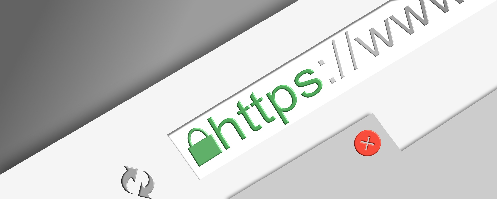
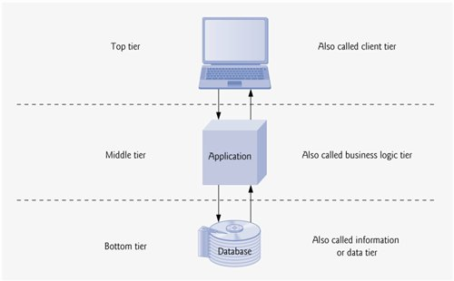
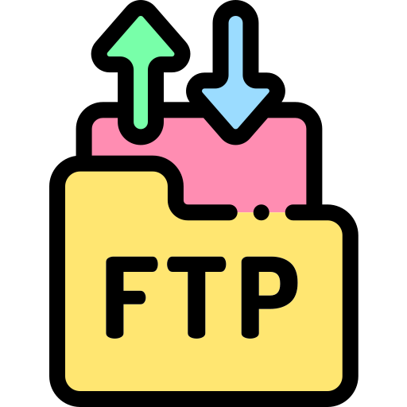

Welcome to the Internet Terminology Hub
this is a comprehensive guide to internet technologies and web evolution.Click any card below to explore detailed explanations of each term.
this is a comprehensive guide to internet technologies and web evolution.Click any card below to explore detailed explanations of each term.
System of interlinked hypertext documents accessed via the Internet. The foundation of modern web browsing.
Read more →
Foundation communication protocols that power the entire Internet. Enables reliable data transmission.
Read more →
Software applications like Chrome, Firefox, and Safari that retrieve and display web content.
Read more →
Computers that store websites and deliver content to browsers upon request using HTTP protocols.
Read more →Protocol for transmitting hypermedia documents across the web. The foundation of data communication.
Read more →Private network within an organization for internal communication and collaboration.
Read more →Network that allows controlled access to an organization's private network by authorized external users.
Read more →
Software architecture that separates applications into multiple layers for better scalability and maintenance.
Read more →
Protocol for transferring files between computers on a network, commonly used for website management.
Read more →Standard markup language for creating web pages and applications. It structures content on the web.
Read more →
The early stage of the web characterized by static pages and limited user interaction.
Read more →
The evolution of the web that introduced dynamic content, social media, and user-generated content.
Read more →
The next phase of the web focused on decentralization, blockchain, and enhanced user control over data.
Read more →The future vision of the web that integrates AI, IoT, and immersive technologies for a more connected experience.
Read more →